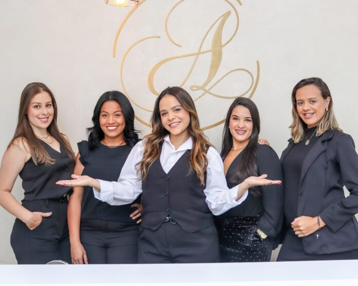
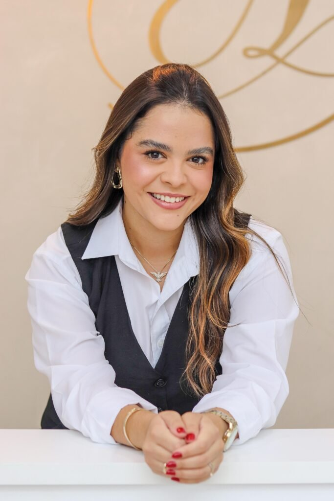
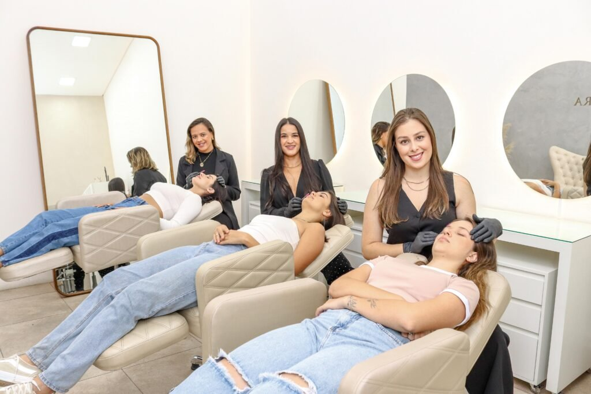
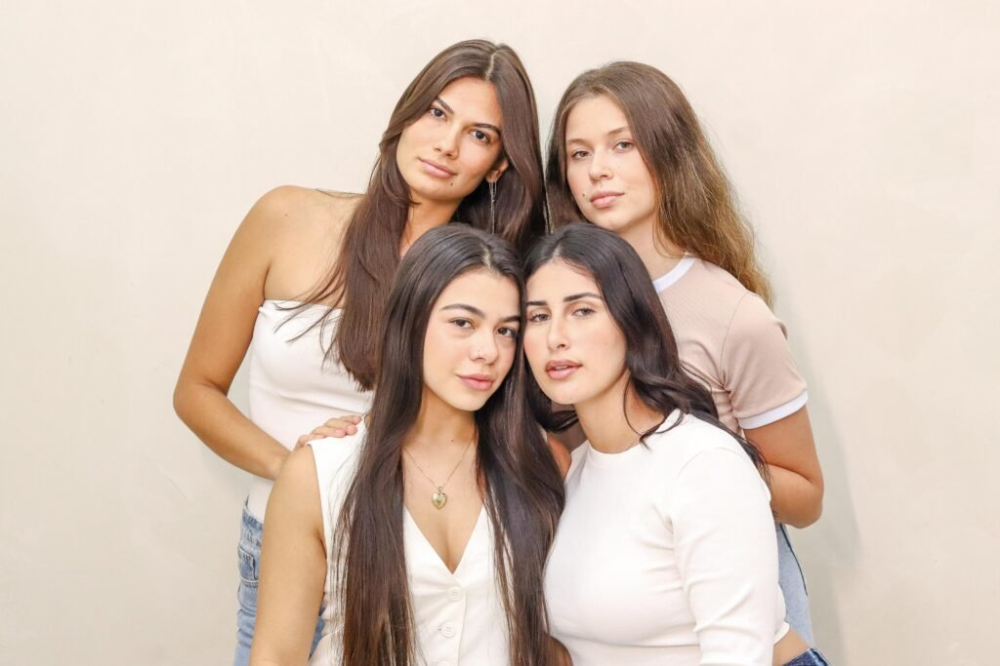

Uma trajetória construída no olhar
Amanda começou na beleza em 2016 e encontrou nas sobrancelhas o caminho para unir técnica, naturalidade e confiança.


Beauty & Academy em Lavras. Embelezamento do olhar, regeneração e formação profissional, com técnica e cuidado individual.
Agendar avaliaçãoLavras, Minas Gerais

Cada rosto pede uma leitura própria. O atendimento começa pela conversa, passa pela avaliação e termina em uma escolha explicada com clareza.
A equipe trabalha para realçar a beleza natural, respeitando formato, expressão e história de cada cliente.
Da maquiagem ao método próprio de design estratégico.
Amanda começou na beleza em 2016 e encontrou nas sobrancelhas o caminho para unir técnica, naturalidade e confiança.
O Studio reúne atendimento e formação profissional. Conhecimento e experiência dividem o mesmo espaço.

O objetivo não é transformar um rosto em outro. É encontrar equilíbrio, expressão e presença.
Fotografias: Lu Vilela, publicadas pela Revista Elitte.
Selecione um atendimento para ver como começar.
Primeiro, a conversa. Você conta o que deseja, o que já fez e o que espera do atendimento.
Depois, a avaliação. A profissional observa o contexto e explica as possibilidades sem promessas genéricas.
Por fim, o plano. Procedimento, etapas e acompanhamento são definidos de forma clara.
Beleza
com identidade